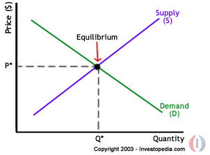

Economics Basics: Introduction
Economics may appear to be the study of complicated tables and charts, statistics and numbers, but, more specifically, it is the study of what constitutes rational human behavior in the endeavor to fulfill needs and wants.
As an individual, for example, you face the problem of having only limited resources with which to fulfill your wants and needs, as a result, you must make certain choices with your money. You'll probably spend part of your money on rent, electricity and food. Then you might use the rest to go to the movies and/or buy a new pair of jeans. Economists are interested in the choices you make, and inquire into why, for instance, you might choose to spend your money on a new DVD player instead of replacing your old TV. They would want to know whether you would still buy a carton of cigarettes if prices increased by $2 per pack. The underlying essence of economics is trying to understand how both individuals and nations behave in response to certain material constraints. ((To learn how economic factors are used in currency trading, read Forex Walkthrough: Economics.)
We can say, therefore, that economics, often referred to as the "dismal science", is a study of certain aspects of society. Adam Smith (1723 - 1790), the "father of modern economics" and author of the famous book "An Inquiry into the Nature and Causes of the Wealth of Nations", spawned the discipline of economics by trying to understand why some nations prospered while others lagged behind in poverty. Others after him also explored how a nation's allocation of resources affects its wealth.
To study these things, economics makes the assumption that human beings will aim to fulfill their self-interests. It also assumes that individuals are rational in their efforts to fulfill their unlimited wants and needs. Economics, therefore, is a social science, which examines people behaving according to their self-interests. The definition set out at the turn of the twentieth century by Alfred Marshall, author of "The Principles Of Economics" (1890), reflects the complexity underlying economics: "Thus it is on one side the study of wealth; and on the other, and more important side, a part of the study of man."
Economics Basics: What Is Economics?
In order to begin our discussion of economics, we first need to understand (1) the concept of scarcity and (2) the two branches of study within economics: microeconomics and macroeconomics.
1. Scarcity
Scarcity, a concept we already implicitly discussed in the introduction to this tutorial, refers to the tension between our limited resources and our unlimited wants and needs. For an individual, resources include time, money and skill. For a country, limited resources include natural resources, capital, labor force and technology.
Because all of our resources are limited in comparison to all of our wants and needs, individuals and nations have to make decisions regarding what goods and services they can buy and which ones they must forgo. For example, if you choose to buy one DVD as opposed to two video tapes, you must give up owning a second movie of inferior technology in exchange for the higher quality of the one DVD. Of course, each individual and nation will have different values, but by having different levels of (scarce) resources, people and nations each form some of these values as a result of the particular scarcities with which they are faced.
So, because of scarcity, people and economies must make decisions over how to allocate their resources. Economics, in turn, aims to study why we make these decisions and how we allocate our resources most efficiently.
2. Macro and Microeconomics
Macro and microeconomics are the two vantage points from which the economy is observed. Macroeconomics looks at the total output of a nation and the way the nation allocates its limited resources of land, labor and capital in an attempt to maximize production levels and promote trade and growth for future generations. After observing the society as a whole, Adam Smith noted that there was an "invisible hand" turning the wheels of the economy: a market force that keeps the economy functioning.
Microeconomics looks into similar issues, but on the level of the individual people and firms within the economy. It tends to be more scientific in its approach, and studies the parts that make up the whole economy. Analyzing certain aspects of human behavior, microeconomics shows us how individuals and firms respond to changes in price and why they demand what they do at particular price levels.
Micro and macroeconomics are intertwined; as economists gain understanding of certain phenomena, they can help nations and individuals make more informed decisions when allocating resources. The systems by which nations allocate their resources can be placed on a spectrum where the command economy is on the one end and the market economy is on the other. The market economy advocates forces within a competitive market, which constitute the "invisible hand", to determine how resources should be allocated. The command economic system relies on the government to decide how the country's resources would best be allocated. In both systems, however, scarcity and unlimited wants force governments and individuals to decide how best to manage resources and allocate them in the most efficient way possible. Nevertheless, there are always limits to what the economy and government can do.
Economics Basics: Production Possibility Frontier, Growth, Opportunity Cost and Trade
A. Production Possibility Frontier (PPF)
Under the field of macroeconomics, the production possibility frontier (PPF) represents the point at which an economy is most efficiently producing its goods and services and, therefore, allocating its resources in the best way possible. If the economy is not producing the quantities indicated by the PPF, resources are being managed inefficiently and the production of society will dwindle. The production possibility frontier shows there are limits to production, so an economy, to achieve efficiency, must decide what combination of goods and services can be produced.
Let's turn to the chart below. Imagine an economy that can produce only wine and cotton. According to the PPF, points A, B and C - all appearing on the curve - represent the most efficient use of resources by the economy. Point X represents an inefficient use of resources, while point Y represents the goals that the economy cannot attain with its present levels of resources.
{kind=link}
As we can see, in order for this economy to produce more wine, it must give up some of the resources it uses to produce cotton (point A). If the economy starts producing more cotton (represented by points B and C), it would have to divert resources from making wine and, consequently, it will produce less wine than it is producing at point A. As the chart shows, by moving production from point A to B, the economy must decrease wine production by a small amount in comparison to the increase in cotton output. However, if the economy moves from point B to C, wine output will be significantly reduced while the increase in cotton will be quite small. Keep in mind that A, B, and C all represent the most efficient allocation of resources for the economy; the nation must decide how to achieve the PPF and which combination to use. If more wine is in demand, the cost of increasing its output is proportional to the cost of decreasing cotton production.
Point X means that the country's resources are not being used efficiently or, more specifically, that the country is not producing enough cotton or wine given the potential of its resources. Point Y, as we mentioned above, represents an output level that is currently unreachable by this economy. However, if there was a change in technology while the level of land, labor and capital remained the same, the time required to pick cotton and grapes would be reduced. Output would increase, and the PPF would be pushed outwards. A new curve, on which Y would appear, would represent the new efficient allocation of resources.
{kind=link}
When the PPF shifts outwards, we know there is growth in an economy. Alternatively, when the PPF shifts inwards it indicates that the economy is shrinking as a result of a decline in its most efficient allocation of resources and optimal production capability. A shrinking economy could be a result of a decrease in supplies or a deficiency in technology.
An economy can be producing on the PPF curve only in theory. In reality, economies constantly struggle to reach an optimal production capacity. And because scarcity forces an economy to forgo one choice for another, the slope of the PPF will always be negative; if production of product A increases then production of product B will have to decrease accordingly.
B. Opportunity Cost
Opportunity cost is the value of what is foregone in order to have something else. This value is unique for each individual. You may, for instance, forgo ice cream in order to have an extra helping of mashed potatoes. For you, the mashed potatoes have a greater value than dessert. But you can always change your mind in the future because there may be some instances when the mashed potatoes are just not as attractive as the ice cream. The opportunity cost of an individual's decisions, therefore, is determined by his or her needs, wants, time and resources (income).
This is important to the PPF because a country will decide how to best allocate its resources according to its opportunity cost. Therefore, the previous wine/cotton example shows that if the country chooses to produce more wine than cotton, the opportunity cost is equivalent to the cost of giving up the required cotton production.
Let's look at another example to demonstrate how opportunity cost ensures that an individual will buy the least expensive of two similar goods when given the choice. For example, assume that an individual has a choice between two telephone services. If he or she were to buy the most expensive service, that individual may have to reduce the number of times he or she goes to the movies each month. Giving up these opportunities to go to the movies may be a cost that is too high for this person, leading him or her to choose the less expensive service.
Remember that opportunity cost is different for each individual and nation. Thus, what is valued more than something else will vary among people and countries when decisions are made about how to allocate resources.
C. Trade, Comparative Advantage and Absolute Advantage
Specialization and Comparative Advantage
An economy can focus on producing all of the goods and services it needs to function, but this may lead to an inefficient allocation of resources and hinder future growth. By using specialization, a country can concentrate on the production of one thing that it can do best, rather than dividing up its resources.
For example, let's look at a hypothetical world that has only two countries (Country A and Country B) and two products (cars and cotton). Each country can make cars and/or cotton. Now suppose that Country A has very little fertile land and an abundance of steel for car production. Country B, on the other hand, has an abundance of fertile land but very little steel. If Country A were to try to produce both cars and cotton, it would need to divide up its resources. Because it requires a lot of effort to produce cotton by irrigating the land, Country A would have to sacrifice producing cars. The opportunity cost of producing both cars and cotton is high for Country A, which will have to give up a lot of capital in order to produce both. Similarly, for Country B, the opportunity cost of producing both products is high because the effort required to produce cars is greater than that of producing cotton.
Each country can produce one of the products more efficiently (at a lower cost) than the other. Country A, which has an abundance of steel, would need to give up more cars than Country B would to produce the same amount of cotton. Country B would need to give up more cotton than Country A to produce the same amount of cars. Therefore, County A has a comparative advantage over Country B in the production of cars, and Country B has a comparative advantage over Country A in the production of cotton.
Now let's say that both countries (A and B) specialize in producing the goods with which they have a comparative advantage. If they trade the goods that they produce for other goods in which they don't have a comparative advantage, both countries will be able to enjoy both products at a lower opportunity cost. Furthermore, each country will be exchanging the best product it can make for another good or service that is the best that the other country can produce. Specialization and trade also works when several different countries are involved. For example, if Country C specializes in the production of corn, it can trade its corn for cars from Country A and cotton from Country B.
Determining how countries exchange goods produced by a comparative advantage ("the best for the best") is the backbone of international trade theory. This method of exchange is considered an optimal allocation of resources, whereby economies, in theory, will no longer be lacking anything that they need. Like opportunity cost, specialization and comparative advantage also apply to the way in which individuals interact within an economy.
Absolute Advantage
Sometimes a country or an individual can produce more than another country, even though countries both have the same amount of inputs. For example, Country A may have a technological advantage that, with the same amount of inputs (arable land, steel, labor), enables the country to manufacture more of both cars and cotton than Country B. A country that can produce more of both goods is said to have an absolute advantage. Better quality resources can give a country an absolute advantage as can a higher level of education and overall technological advancement. It is not possible, however, for a country to have a comparative advantage in everything that it produces, so it will always be able to benefit from trade.
Economics Basics: Supply and Demand
Supply and demand is perhaps one of the most fundamental concepts of economics and it is the backbone of a market economy. Demand refers to how much (quantity) of a product or service is desired by buyers. The quantity demanded is the amount of a product people are willing to buy at a certain price; the relationship between price and quantity demanded is known as the demand relationship. Supply represents how much the market can offer. The quantity supplied refers to the amount of a certain good producers are willing to supply when receiving a certain price. The correlation between price and how much of a good or service is supplied to the market is known as the supply relationship. Price, therefore, is a reflection of supply and demand.
The relationship between demand and supply underlie the forces behind the allocation of resources. In market economy theories, demand and supply theory will allocate resources in the most efficient way possible. How? Let us take a closer look at the law of demand and the law of supply.
A. The Law of Demand
The law of demand states that, if all other factors remain equal, the higher the price of a good, the less people will demand that good. In other words, the higher the price, the lower the quantity demanded. The amount of a good that buyers purchase at a higher price is less because as the price of a good goes up, so does the opportunity cost of buying that good. As a result, people will naturally avoid buying a product that will force them to forgo the consumption of something else they value more. The chart below shows that the curve is a downward slope.
{kind=link}
A, B and C are points on the demand curve. Each point on the curve reflects a direct correlation between quantity demanded (Q) and price (P). So, at point A, the quantity demanded will be Q1 and the price will be P1, and so on. The demand relationship curve illustrates the negative relationship between price and quantity demanded. The higher the price of a good the lower the quantity demanded (A), and the lower the price, the more the good will be in demand (C).
B. The Law of Supply
Like the law of demand, the law of supply demonstrates the quantities that will be sold at a certain price. But unlike the law of demand, the supply relationship shows an upward slope. This means that the higher the price, the higher the quantity supplied. Producers supply more at a higher price because selling a higher quantity at a higher price increases revenue.
{kind=link}
A, B and C are points on the supply curve. Each point on the curve reflects a direct correlation between quantity supplied (Q) and price (P). At point B, the quantity supplied will be Q2 and the price will be P2, and so on. (To learn how economic factors are used in currency trading, read Forex Walkthrough: Economics.)
Time and Supply
Unlike the demand relationship, however, the supply relationship is a factor of time. Time is important to supply because suppliers must, but cannot always, react quickly to a change in demand or price. So it is important to try and determine whether a price change that is caused by demand will be temporary or permanent.
Let's say there's a sudden increase in the demand and price for umbrellas in an unexpected rainy season; suppliers may simply accommodate demand by using their production equipment more intensively. If, however, there is a climate change, and the population will need umbrellas year-round, the change in demand and price will be expected to be long term; suppliers will have to change their equipment and production facilities in order to meet the long-term levels of demand.
C. Supply and Demand Relationship
Now that we know the laws of supply and demand, let's turn to an example to show how supply and demand affect price.
Imagine that a special edition CD of your favorite band is released for $20. Because the record company's previous analysis showed that consumers will not demand CDs at a price higher than $20, only ten CDs were released because the opportunity cost is too high for suppliers to produce more. If, however, the ten CDs are demanded by 20 people, the price will subsequently rise because, according to the demand relationship, as demand increases, so does the price. Consequently, the rise in price should prompt more CDs to be supplied as the supply relationship shows that the higher the price, the higher the quantity supplied.
If, however, there are 30 CDs produced and demand is still at 20, the price will not be pushed up because the supply more than accommodates demand. In fact after the 20 consumers have been satisfied with their CD purchases, the price of the leftover CDs may drop as CD producers attempt to sell the remaining ten CDs. The lower price will then make the CD more available to people who had previously decided that the opportunity cost of buying the CD at $20 was too high.
D. Equilibrium
When supply and demand are equal (i.e. when the supply function and demand function intersect) the economy is said to be at equilibrium. At this point, the allocation of goods is at its most efficient because the amount of goods being supplied is exactly the same as the amount of goods being demanded. Thus, everyone (individuals, firms, or countries) is satisfied with the current economic condition. At the given price, suppliers are selling all the goods that they have produced and consumers are getting all the goods that they are demanding.
|  |
{kind=link}
As you can see on the chart, equilibrium occurs at the intersection of the demand and supply curve, which indicates no allocative inefficiency. At this point, the price of the goods will be P* and the quantity will be Q*. These figures are referred to as equilibrium price and quantity.
In the real market place equilibrium can only ever be reached in theory, so the prices of goods and services are constantly changing in relation to fluctuations in demand and supply.
E. Disequilibrium
Disequilibrium occurs whenever the price or quantity is not equal to P* or Q*.
1. Excess Supply
If the price is set too high, excess supply will be created within the economy and there will be allocative inefficiency.
{kind=link}
At price P1 the quantity of goods that the producers wish to supply is indicated by Q2. At P1, however, the quantity that the consumers want to consume is at Q1, a quantity much less than Q2. Because Q2 is greater than Q1, too much is being produced and too little is being consumed. The suppliers are trying to produce more goods, which they hope to sell to increase profits, but those consuming the goods will find the product less attractive and purchase less because the price is too high.
2. Excess Demand
Excess demand is created when price is set below the equilibrium price. Because the price is so low, too many consumers want the good while producers are not making enough of it.

|
In this situation, at price P1, the quantity of goods demanded by consumers at this price is Q2. Conversely, the quantity of goods that producers are willing to produce at this price is Q1. Thus, there are too few goods being produced to satisfy the wants (demand) of the consumers. However, as consumers have to compete with one other to buy the good at this price, the demand will push the price up, making suppliers want to supply more and bringing the price closer to its equilibrium.
F. Shifts vs. Movement
For economics, the "movements" and "shifts" in relation to the supply and demand curves represent very different market phenomena:
1. Movements
A movement refers to a change along a curve. On the demand curve, a movement denotes a change in both price and quantity demanded from one point to another on the curve. The movement implies that the demand relationship remains consistent. Therefore, a movement along the demand curve will occur when the price of the good changes and the quantity demanded changes in accordance to the original demand relationship. In other words, a movement occurs when a change in the quantity demanded is caused only by a change in price, and vice versa.
{kind=link}
Like a movement along the demand curve, a movement along the supply curve means that the supply relationship remains consistent. Therefore, a movement along the supply curve will occur when the price of the good changes and the quantity supplied changes in accordance to the original supply relationship. In other words, a movement occurs when a change in quantity supplied is caused only by a change in price, and vice versa.
{kind=link}
2. Shifts
A shift in a demand or supply curve occurs when a good's quantity demanded or supplied changes even though price remains the same. For instance, if the price for a bottle of beer was $2 and the quantity of beer demanded increased from Q1 to Q2, then there would be a shift in the demand for beer. Shifts in the demand curve imply that the original demand relationship has changed, meaning that quantity demand is affected by a factor other than price. A shift in the demand relationship would occur if, for instance, beer suddenly became the only type of alcohol available for consumption.

|
Conversely, if the price for a bottle of beer was $2 and the quantity supplied decreased from Q1 to Q2, then there would be a shift in the supply of beer. Like a shift in the demand curve, a shift in the supply curve implies that the original supply curve has changed, meaning that the quantity supplied is effected by a factor other than price. A shift in the supply curve would occur if, for instance, a natural disaster caused a mass shortage of hops; beer manufacturers would be forced to supply less beer for the same price.
{kind=link}
Economics Basics: Elasticity
The degree to which a demand or supply curve reacts to a change in price is the curve's elasticity. Elasticity varies among products because some products may be more essential to the consumer. Products that are necessities are more insensitive to price changes because consumers would continue buying these products despite price increases. Conversely, a price increase of a good or service that is considered less of a necessity will deter more consumers because the opportunity cost of buying the product will become too high.
A good or service is considered to be highly elastic if a slight change in price leads to a sharp change in the quantity demanded or supplied. Usually these kinds of products are readily available in the market and a person may not necessarily need them in his or her daily life. On the other hand, an inelastic good or service is one in which changes in price witness only modest changes in the quantity demanded or supplied, if any at all. These goods tend to be things that are more of a necessity to the consumer in his or her daily life.
To determine the elasticity of the supply or demand curves, we can use this simple equation:
| Elasticity = (% change in quantity / % change in price) |
If elasticity is greater than or equal to one, the curve is considered to be elastic. If it is less than one, the curve is said to be inelastic.
As we mentioned previously, the demand curve is a negative slope, and if there is a large decrease in the quantity demanded with a small increase in price, the demand curve looks flatter, or more horizontal. This flatter curve means that the good or service in question is elastic.
{kind=link}
Meanwhile, inelastic demand is represented with a much more upright curve as quantity changes little with a large movement in price.
{kind=link}
Elasticity of supply works similarly. If a change in price results in a big change in the amount supplied, the supply curve appears flatter and is considered elastic. Elasticity in this case would be greater than or equal to one.
{kind=link}
On the other hand, if a big change in price only results in a minor change in the quantity supplied, the supply curve is steeper and its elasticity would be less than one.
{kind=link}
A. Factors Affecting Demand Elasticity
There are three main factors that influence a demand's price elasticity:
1. The availability of substitutes - This is probably the most important factor influencing the elasticity of a good or service. In general, the more substitutes, the more elastic the demand will be. For example, if the price of a cup of coffee went up by $0.25, consumers could replace their morning caffeine with a cup of tea. This means that coffee is an elastic good because a raise in price will cause a large decrease in demand as consumers start buying more tea instead of coffee.
However, if the price of caffeine were to go up as a whole, we would probably see little change in the consumption of coffee or tea because there are few substitutes for caffeine. Most people are not willing to give up their morning cup of caffeine no matter what the price. We would say, therefore, that caffeine is an inelastic product because of its lack of substitutes. Thus, while a product within an industry is elastic due to the availability of substitutes, the industry itself tends to be inelastic. Usually, unique goods such as diamonds are inelastic because they have few if any substitutes.
2. Amount of income available to spend on the good - This factor affecting demand elasticity refers to the total a person can spend on a particular good or service. Thus, if the price of a can of Coke goes up from $0.50 to $1 and income stays the same, the income that is available to spend on coke, which is $2, is now enough for only two rather than four cans of Coke. In other words, the consumer is forced to reduce his or her demand of Coke. Thus if there is an increase in price and no change in the amount of income available to spend on the good, there will be an elastic reaction in demand; demand will be sensitive to a change in price if there is no change in income.
3. Time - The third influential factor is time. If the price of cigarettes goes up $2 per pack, a smoker with very few available substitutes will most likely continue buying his or her daily cigarettes. This means that tobacco is inelastic because the change in price will not have a significant influence on the quantity demanded. However, if that smoker finds that he or she cannot afford to spend the extra $2 per day and begins to kick the habit over a period of time, the price elasticity of cigarettes for that consumer becomes elastic in the long run.
B. Income Elasticity of Demand
In the second factor outlined above, we saw that if price increases while income stays the same, demand will decrease. It follows, then, that if there is an increase in income, demand tends to increase as well. The degree to which an increase in income will cause an increase in demand is called income elasticity of demand, which can be expressed in the following equation:
{kind=link}
If EDy is greater than one, demand for the item is considered to have a high income elasticity. If however EDy is less than one, demand is considered to be income inelastic. Luxury items usually have higher income elasticity because when people have a higher income, they don't have to forfeit as much to buy these luxury items. Let's look at an example of a luxury good: air travel.
Bob has just received a $10,000 increase in his salary, giving him a total of $80,000 per annum. With this higher purchasing power, he decides that he can now afford air travel twice a year instead of his previous once a year. With the following equation we can calculate income demand elasticity:
{kind=link}
Income elasticity of demand for Bob's air travel is seven - highly elastic.
With some goods and services, we may actually notice a decrease in demand as income increases. These are considered goods and services of inferior quality that will be dropped by a consumer who receives a salary increase. An example may be the increase in the demand of DVDs as opposed to video cassettes, which are generally considered to be of lower quality. Products for which the demand decreases as income increases have an income elasticity of less than zero. Products that witness no change in demand despite a change in income usually have an income elasticity of zero - these goods and services are considered necessities.
Economics Basics: Utility
We have already seen that the focus of economics is to understand the problem of scarcity: the problem of fulfilling the unlimited wants of humankind with limited and/or scarce resources. Because of scarcity, economies need to allocate their resources efficiently. Underlying the laws of demand and supply is the concept of utility, which represents the advantage or fulfillment a person receives from consuming a good or service. Utility, then, explains how individuals and economies aim to gain optimal satisfaction in dealing with scarcity.
Utility is an abstract concept rather than a concrete, observable quantity. The units to which we assign an "amount" of utility, therefore, are arbitrary, representing a relative value. Total utility is the aggregate sum of satisfaction or benefit that an individual gains from consuming a given amount of goods or services in an economy. The amount of a person's total utility corresponds to the person's level of consumption. Usually, the more the person consumes, the larger his or her total utility will be. Marginal utility is the additional satisfaction, or amount of utility, gained from each extra unit of consumption.
Although total utility usually increases as more of a good is consumed, marginal utility usually decreases with each additional increase in the consumption of a good. This decrease demonstrates the law of diminishing marginal utility. Because there is a certain threshold of satisfaction, the consumer will no longer receive the same pleasure from consumption once that threshold is crossed. In other words, total utility will increase at a slower pace as an individual increases the quantity consumed.
Take, for example, a chocolate bar. Let's say that after eating one chocolate bar your sweet tooth has been satisfied. Your marginal utility (and total utility) after eating one chocolate bar will be quite high. But if you eat more chocolate bars, the pleasure of each additional chocolate bar will be less than the pleasure you received from eating the one before - probably because you are starting to feel full or you have had too many sweets for one day.
{kind=link}
This table shows that total utility will increase at a much slower rate as marginal utility diminishes with each additional bar. Notice how the first chocolate bar gives a total utility of 70 but the next three chocolate bars together increase total utility by only 18 additional units.
The law of diminishing marginal utility helps economists understand the law of demand and the negative sloping demand curve. The less of something you have, the more satisfaction you gain from each additional unit you consume; the marginal utility you gain from that product is therefore higher, giving you a higher willingness to pay more for it. Prices are lower at a higher quantity demanded because your additional satisfaction diminishes as you demand more.
In order to determine what a consumer's utility and total utility are, economists turn to consumer demand theory, which studies consumer behavior and satisfaction. Economists assume the consumer is rational and will thus maximize his or her total utility by purchasing a combination of different products rather than more of one particular product. Thus, instead of spending all of your money on three chocolate bars, which has a total utility of 85, you should instead purchase the one chocolate bar, which has a utility of 70, and perhaps a glass of milk, which has a utility of 50. This combination will give you a maximized total utility of 120 but at the same cost as the three chocolate bars.
Economics Basics: Monopolies, Oligopolies and Perfect Competition
Economists assume that there are a number of different buyers and sellers in the marketplace. This means that we have competition in the market, which allows price to change in response to changes in supply and demand. Furthermore, for almost every product there are substitutes, so if one product becomes too expensive, a buyer can choose a cheaper substitute instead. In a market with many buyers and sellers, both the consumer and the supplier have equal ability to influence price.
In some industries, there are no substitutes and there is no competition. In a market that has only one or few suppliers of a good or service, the producer(s) can control price, meaning that a consumer does not have choice, cannot maximize his or her total utility and has have very little influence over the price of goods.
A monopoly is a market structure in which there is only one producer/seller for a product. In other words, the single business is the industry. Entry into such a market is restricted due to high costs or other impediments, which may be economic, social or political. For instance, a government can create a monopoly over an industry that it wants to control, such as electricity. Another reason for the barriers against entry into a monopolistic industry is that oftentimes, one entity has the exclusive rights to a natural resource. For example, in Saudi Arabia the government has sole control over the oil industry. A monopoly may also form when a company has a copyright or patent that prevents others from entering the market. Pfizer, for instance, had a patent on Viagra.
In an oligopoly, there are only a few firms that make up an industry. This select group of firms has control over the price and, like a monopoly, an oligopoly has high barriers to entry. The products that the oligopolistic firms produce are often nearly identical and, therefore, the companies, which are competing for market share, are interdependent as a result of market forces. Assume, for example, that an economy needs only 100 widgets. Company X produces 50 widgets and its competitor, Company Y, produces the other 50. The prices of the two brands will be interdependent and, therefore, similar. So, if Company X starts selling the widgets at a lower price, it will get a greater market share, thereby forcing Company Y to lower its prices as well.
There are two extreme forms of market structure: monopoly and, its opposite, perfect competition. Perfect competition is characterized by many buyers and sellers, many products that are similar in nature and, as a result, many substitutes. Perfect competition means there are few, if any, barriers to entry for new companies, and prices are determined by supply and demand. Thus, producers in a perfectly competitive market are subject to the prices determined by the market and do not have any leverage. For example, in a perfectly competitive market, should a single firm decide to increase its selling price of a good, the consumers can just turn to the nearest competitor for a better price, causing any firm that increases its prices to lose market share and profits.
Economics Basics: Conclusion
We hope that this has given you some insight to the market and, in turn, your investment strategies. Let's recap what we've learned in this tutorial:
- Economics is best described as the study of humans behaving in response to having only limited resources to fulfill unlimited wants and needs.
- Scarcity refers to the limited resources in an economy. Macroeconomics is the study of the economy as a whole. Microeconomics analyzes the individual people and companies that make up the greater economy.
- The Production Possibility Frontier (PPF) allows us to determine how an economy can allocate its resources in order to achieve optimal output. Knowing this will lead countries to specialize and trade products amongst each other rather than each producing all the products it needs.
- Demand and supply refer to the relationship price has with the quantity consumers demand and the quantity supplied by producers. As price increases, quantity demanded decreases and quantity supplied increases.
- Elasticity tells us how much quantity demanded or supplied changes when there is a change in price. The more the quantity changes, the more elastic the good or service. Products whose quantity supplied or demanded does not change much with a change in price are considered inelastic.
- Utility is the amount of benefit a consumer receives from a given good or service. Economists use utility to determine how an individual can get the most satisfaction out of his or her available resources.
- Market economies are assumed to have many buyers and sellers, high competition and many substitutes. Monopolies characterize industries in which the supplier determines prices and high barriers prevent any competitors from entering the market. Oligopolies are industries with a few interdependent companies. Perfect competition represents an economy with many businesses competing with one another for consumer interest and profits.